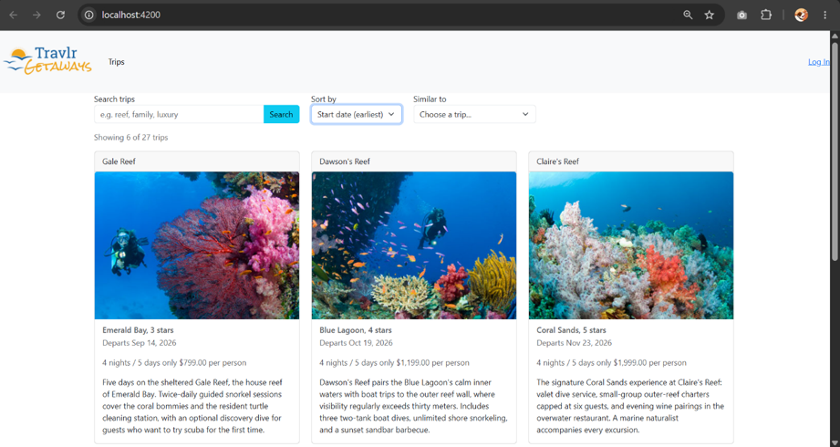
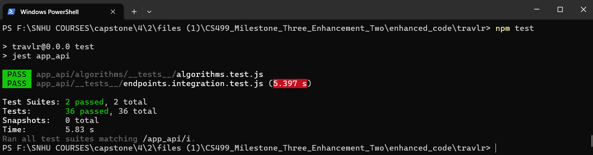

Milestone narrative, submitted as graded coursework.
Download the Word original: CS499_Milestone_Three_Narrative.docx
Milestone Three Narrative: Enhancement Two, Algorithms and Data Structures
Artifact Description
The artifact for this enhancement is Travlr Getaways, the full stack travel booking application I built in CS 465: Full Stack Development I earlier in the Computer Science program, and the same artifact I enhanced for Milestone Two. The application pairs a MongoDB database and Express REST API with two frontends: a server-rendered Handlebars site for customers and the administrative single-page application that Enhancement One migrated from Angular to React 18 with TypeScript. Before this enhancement, the trip listing had no meaningful data handling at all: the API returned the entire unsorted collection in whatever order MongoDB stored it, and the client simply rendered everything it received.
Justification and Improvements
I selected this artifact for the algorithms and data structures category precisely because its data layer was so naive, which made it an honest canvas for demonstrating algorithmic reasoning rather than decorating code that already worked well. This enhancement added four algorithmic capabilities, each implemented explicitly in application code so that the algorithm itself, its complexity, and its trade-offs are visible and testable rather than hidden inside a library call.
First, sorting is now performed server-side by a stable merge sort I implemented from scratch, with O(n log n) time in all cases and O(n) auxiliary space. I chose to implement the algorithm rather than call the built-in sort for a documented reason: ECMAScript has only guaranteed the stability of Array.prototype.sort since ES2019, and engines historically switched between stable and unstable algorithms depending on array size (Mozilla Developer Network [MDN], 2025b). Implementing merge sort makes the stability guarantee explicit and provable by test, and stability is functionally important here because trips with equal prices must keep a deterministic secondary order for pagination to work. Second, search is handled by a field-weighted relevance scorer: query text is tokenized into lowercase alphanumeric terms and each term earns three points for a trip name match, two for a resort match, and one for a description match, with a bonus for name prefixes. Because matching is done with tokenized substring checks, no regular expression is ever constructed from user input, which structurally eliminates the possibility of catastrophic-backtracking (ReDoS) attacks through crafted queries. Third, results are paginated with cursors rather than page offsets: each page response encodes the position where it ended, as the pair of the last item's sort value and its unique trip code, and the next request resumes after that position. I chose cursors over offsets after analyzing the failure mode of offset pagination, which duplicates or skips records whenever the underlying data changes between page requests. The cursor is validated defensively: a malformed cursor and a cursor replayed against different query parameters both produce clean 400 responses, never a crash or an inconsistent page. Fourth, a recommendation endpoint returns the k trips most similar to a chosen seed trip. A hash map, whose specification requires sublinear access and which engines implement with structures such as hash tables offering O(1) lookup (MDN, 2025a), indexes the collection by trip code for constant-time seed retrieval, and a bounded min-heap of capacity k selects the top-k results in a single pass. This is the classic top-k trade-off analyzed in the algorithms literature: heap-based selection runs in O(n log k) time and O(k) space, compared with O(n log n) time and O(n) space for sorting the whole collection and slicing it (Cormen et al., 2022). The similarity function combines price proximity, matching resort star ratings, matching trip length, and shared content vocabulary weighted by inverse document frequency, so rare destination terms such as alpine or dunes count far more than generic travel words shared by half the catalog, and every recommendation is deterministic, explainable, and displayed with its score in the interface. The weighting itself is a documented redesign: my first version used unweighted token overlap, and my own integration tests proved that price similarity dominated content, recommending a desert camel trek for a reef seed; introducing the frequency weighting made destination clusters emerge from vocabulary alone, without the algorithm ever being told that categories exist. All four capabilities are surfaced in the React application as a search box, a sort selector, a Load More pagination control, and a Similar To panel, and the seed dataset was expanded from three to twenty-seven trips spanning reef, mountain, desert, and rainforest destinations, so that the behaviors are actually observable and the similarity scorer has genuinely dissimilar trips to discriminate between. The work is verified by thirty-six new backend Jest tests: twenty-one unit tests over the pure algorithm modules, including a stability proof for the merge sort and capacity and ordering proofs for the heap, and fifteen integration tests that run the real Express and Mongoose pipeline against an in-memory MongoDB instance, including a test that walks the cursor across every page and asserts no duplicates and no gaps. Figures 1 through 4 show the working product: the chronologically sorted listing over the full catalog (Figure 1), cross-category relevance search (Figure 2), the scored recommendation panel for a mountain seed trip (Figure 3), and the passing backend test suite (Figure 4).
Figure 1
The enhanced trip listing sorted chronologically by start date, with server-side search, sort selection, and cursor-based pagination over the twenty-seven-trip catalog.

Figure 2
Relevance-scored search returning luxury trips across all destination categories, ranked by field-weighted match score.
Figure 3
Top-k recommendations for a mountain seed trip, selected by bounded min-heap with IDF-weighted similarity scores displayed.
Figure 4
The backend Jest suite: twenty-one algorithm unit tests and fifteen integration tests executed against an in-memory MongoDB instance, all passing.

Course Outcome Progress
This enhancement targets and, I believe, substantially demonstrates Course Outcome 3, designing and evaluating computing solutions using algorithmic principles while managing the trade-offs involved in design choices. The trade-offs here were not incidental but the core of the work: implementing merge sort versus trusting engine-dependent sort stability, heap-based top-k selection versus sort-and-slice, and cursor pagination versus offset pagination are each documented decisions with complexity analyses in the code and in this narrative. The enhancement also continues Course Outcome 4 through the testing infrastructure, particularly the in-memory database harness that lets the full API pipeline run inside the test suite, and adds incremental progress toward Course Outcome 5 through defensive input handling: clamped limits, capped query lengths, structural cursor validation, and the deliberate avoidance of user-derived regular expressions. My outcome-coverage plan is unchanged: the databases enhancement in Milestone Four will complete Outcome 5 in depth and will revisit this module's work by pushing the search, sort, and pagination logic down into MongoDB aggregation pipelines and indexes, which will allow a direct comparison between application-level and database-level implementations of the same requirements.
Reflection
The deepest learning in this enhancement came from discovering that the hard part of algorithms in production code is rarely the textbook algorithm itself. Writing merge sort took an evening; making its output stable, deterministic, and resumable across paginated requests took real design work, because pagination quietly imposes requirements, such as a total order with a unique tiebreaker, that no algorithms course had ever forced me to articulate. The bounded min-heap taught a similar lesson from the opposite direction: the asymptotic win of O(n log k) over O(n log n) is real, but proving my implementation correct required more tests than any other module, and the test that caught my one scoring bug was not a heap test at all but a relevance test whose two query tokens accidentally matched different fields and tied. That experience sharpened how I write tests: each assertion now isolates exactly one behavior.
The biggest challenge was the pagination edge cases. My first cursor design broke whenever the anchor record was deleted between page requests, which I only noticed because the integration suite creates and destroys its own database and made such scenarios cheap to simulate. The fix, falling back to the first record past the anchor's sort position, is three lines of code that took longer to reason about than the merge sort did. That is also why I invested in the in-memory MongoDB test harness: after Enhancement One shipped with a latent CORS defect that only surfaced during live integration testing, I wanted this enhancement verified end to end, through Express and Mongoose and not just as pure functions, before submission. Watching fifteen integration tests exercise real HTTP requests against a real database, including the malicious inputs, gave me a confidence in this milestone that unit tests alone never could. A smaller but equally practical lesson surfaced during interface testing: my first version offered sorting by start date while the trip cards never displayed one, so a correctly sorted list looked unchanged to the user. Displaying the date fixed it and taught me a principle no algorithms text mentions: a sort key must be visible in the interface, or the algorithm behind it appears broken no matter how correct it is. Manual testing surfaced one more state bug in the same spirit: the recommendations panel, once opened, stayed rendered above the results when a new search ran, so fresh results loaded correctly beneath a stale panel and the search appeared dead. The fix was to treat the recommendation context as derived state that a query change invalidates, and I converted the bug into three React Testing Library regression tests so it can never silently return.
References
Cormen, T. H., Leiserson, C. E., Rivest, R. L., & Stein, C. (2022). Introduction to algorithms (4th ed.). MIT Press. https://mitpress.mit.edu/9780262046305/introduction-to-algorithms/
Mozilla Developer Network. (2025a). Map. MDN Web Docs. https://developer.mozilla.org/en-US/docs/Web/JavaScript/Reference/Global_Objects/Map
Mozilla Developer Network. (2025b). Array.prototype.sort(). MDN Web Docs. https://developer.mozilla.org/en-US/docs/Web/JavaScript/Reference/Global_Objects/Array/sort